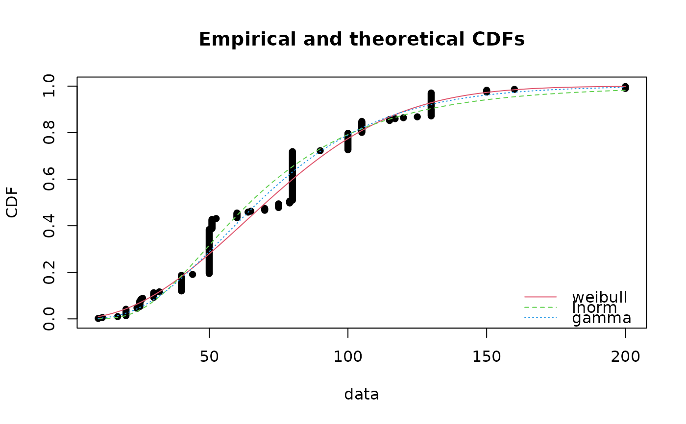
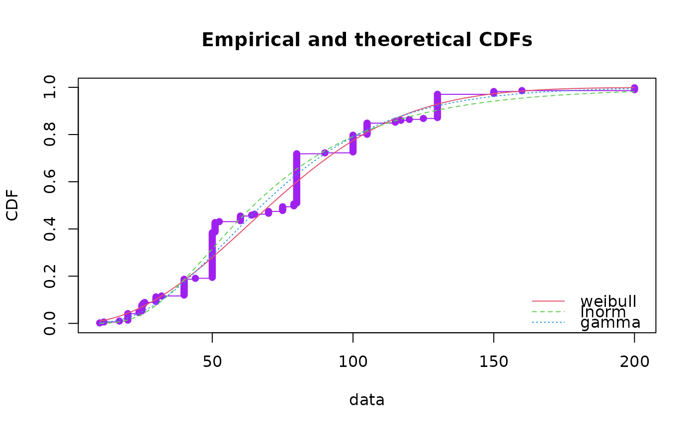
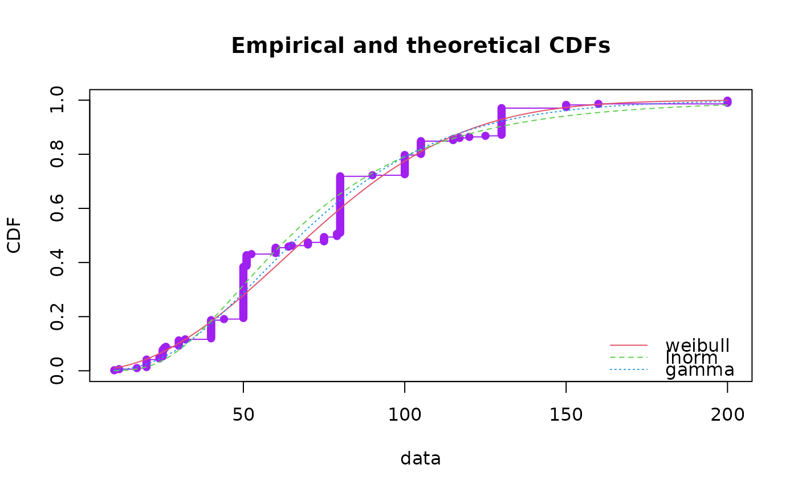
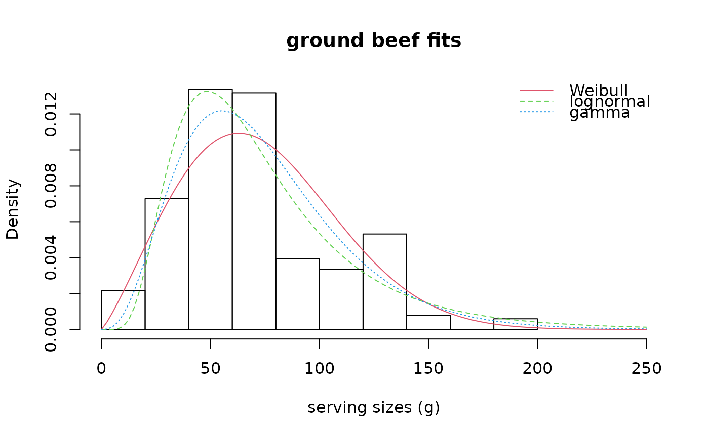
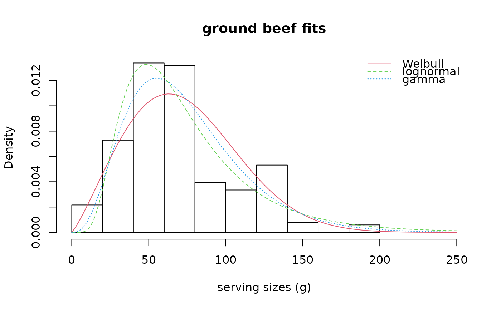
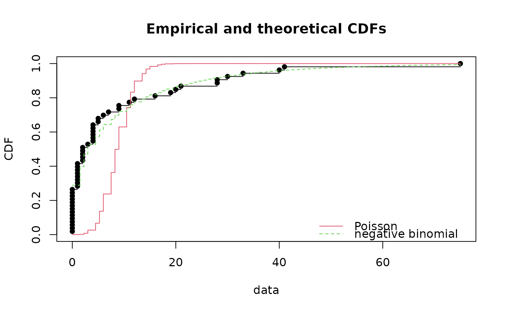
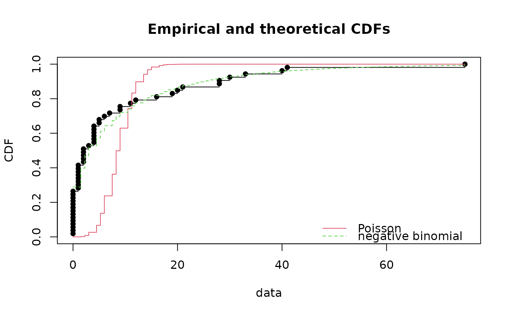

Graphical comparison of multiple fitted distributions (for non-censored data)
graphcomp.Rdcdfcomp plots the empirical cumulative distribution against fitted distribution functions,
denscomp plots the histogram against fitted density functions,
qqcomp plots theoretical quantiles against empirical ones,
ppcomp plots theoretical probabilities against empirical ones.
Only cdfcomp is able to plot fits of a discrete distribution.
Usage
cdfcomp(ft, xlim, ylim, xlogscale = FALSE, ylogscale = FALSE, main, xlab, ylab,
datapch, datacol, fitlty, fitcol, fitlwd, addlegend = TRUE, legendtext,
xlegend = "bottomright", ylegend = NULL, horizontals = TRUE, verticals = FALSE,
do.points = TRUE, use.ppoints = TRUE, a.ppoints = 0.5, name.points = NULL,
lines01 = FALSE, discrete, add = FALSE, plotstyle = "graphics",
fitnbpts = 101, ...)
denscomp(ft, xlim, ylim, probability = TRUE, main, xlab, ylab, datacol, fitlty,
fitcol, fitlwd, addlegend = TRUE, legendtext, xlegend = "topright", ylegend = NULL,
demp = FALSE, dempcol = "black", plotstyle = "graphics",
discrete, fitnbpts = 101, fittype="l", ...)
qqcomp(ft, xlim, ylim, xlogscale = FALSE, ylogscale = FALSE, main, xlab, ylab,
fitpch, fitcol, fitlwd, addlegend = TRUE, legendtext, xlegend = "bottomright",
ylegend = NULL, use.ppoints = TRUE, a.ppoints = 0.5, line01 = TRUE,
line01col = "black", line01lty = 1, ynoise = TRUE, plotstyle = "graphics", ...)
ppcomp(ft, xlim, ylim, xlogscale = FALSE, ylogscale = FALSE, main, xlab, ylab,
fitpch, fitcol, fitlwd, addlegend = TRUE, legendtext, xlegend = "bottomright",
ylegend = NULL, use.ppoints = TRUE, a.ppoints = 0.5, line01 = TRUE,
line01col = "black", line01lty = 1, ynoise = TRUE, plotstyle = "graphics", ...)Arguments
- ft
One
"fitdist"object or a list of objects of class"fitdist".- xlim
The \(x\)-limits of the plot.
- ylim
The \(y\)-limits of the plot.
- xlogscale
If
TRUE, uses a logarithmic scale for the \(x\)-axis.- ylogscale
If
TRUE, uses a logarithmic scale for the \(y\)-axis.- main
A main title for the plot. See also
title.- xlab
A label for the \(x\)-axis, defaults to a description of
x.- ylab
A label for the \(y\)-axis, defaults to a description of
y.- datapch
An integer specifying a symbol to be used in plotting data points. See also
par.- datacol
A specification of the color to be used in plotting data points. See also
par.- fitcol
A (vector of) color(s) to plot fitted distributions. If there are fewer colors than fits they are recycled in the standard fashion. See also
par.- fitlty
A (vector of) line type(s) to plot fitted distributions/densities. If there are fewer values than fits they are recycled in the standard fashion. See also
par.- fitlwd
A (vector of) line size(s) to plot fitted distributions/densities. If there are fewer values than fits they are recycled in the standard fashion. See also
par.- fitpch
A (vector of) line type(s) to plot fitted quantiles/probabilities. If there are fewer values than fits they are recycled in the standard fashion. See also
par.- fittype
The type of plot for fitted probabilities in the case of discrete distributions: possible types are
"p"for points,"l"for lines and"o"for both overplotted (as inplot.default).fittypeis not used for non-discrete distributions.- fitnbpts
A numeric for the number of points to compute fitted probabilities or cumulative probabilities. Default to
101.- addlegend
If
TRUE, a legend is added to the plot.- legendtext
A character or expression vector of length \(\ge 1\) to appear in the legend. See also
legend.- xlegend, ylegend
The \(x\) and \(y\) coordinates to be used to position the legend. They can be specified by keyword. If
plotstyle = "graphics", seexy.coordsandlegend. Ifplotstyle = "ggplot", thexlegendkeyword must be one oftop,bottom,left, orright. See alsoguide_legendinggplot2- horizontals
If
TRUE, draws horizontal lines for the step empirical cumulative distribution function (ecdf). See alsoplot.stepfun.- verticals
If
TRUE, draws vertical lines for the empirical cumulative distribution function (ecdf). Only taken into account ifhorizontals=TRUE.- do.points
If
TRUE(by default), draws points at the x-locations. For large dataset (n > 1e4),do.pointsis ignored and no point is drawn.- use.ppoints
If
TRUE, probability points of the empirical distribution are defined using functionppointsas(1:n - a.ppoints)/(n - 2a.ppoints + 1). IfFALSE, probability points are simply defined as(1:n)/n. This argument is ignored for discrete data.- a.ppoints
If
use.ppoints=TRUE, this is passed to theppointsfunction.- name.points
Label vector for points if they are drawn i.e. if do.points = TRUE (only for non censored data).
- lines01
A logical to plot two horizontal lines at
h=0andh=1forcdfcomp.- line01
A logical to plot an horizontal line \(y=x\) for
qqcompandppcomp.- line01col, line01lty
Color and line type for
line01. See alsopar.- demp
A logical to add the empirical density on the plot, using the
densityfunction.- dempcol
A color for the empirical density in case it is added on the plot (
demp=TRUE).- ynoise
A logical to add a small noise when plotting empirical quantiles/probabilities for
qqcompandppcomp.- probability
A logical to use the probability scale for
denscomp. See alsohist.- discrete
If
TRUE, the distributions are considered discrete. When missing,discreteis set toTRUEif at least one object of the listftis discrete.- add
If
TRUE, adds to an already existing plot. IfFALSE, starts a new plot. This parameter is not available whenplotstyle = "ggplot".- plotstyle
"graphics"or"ggplot". If"graphics", the display is built withgraphicsfunctions. If"ggplot", a graphic object output is created withggplot2functions (theggplot2package must be installed).- ...
Further graphical arguments passed to graphical functions used in
cdfcomp,denscomp,ppcompandqqcompwhenplotstyle = "graphics". Whenplotstyle = "ggplot", these arguments are only used by the histogram plot (hist) in thedenscompfunction. Whenplotstyle = "ggplot", the graphical output can be customized with relevantggplot2functions after you store your output.
Details
cdfcomp provides a plot of the empirical distribution and each fitted
distribution in cdf, by default using the Hazen's rule
for the empirical distribution, with probability points defined as
(1:n - 0.5)/n. If discrete is TRUE, probability points
are always defined as (1:n)/n. For large dataset (n > 1e4), no
point is drawn but the line for ecdf is drawn instead.
Note that when horizontals, verticals and do.points are FALSE,
no empirical point is drawn, only the fitted cdf is shown.
denscomp provides a density plot of each fitted distribution
with the histogram of the data for conyinuous data.
When discrete=TRUE, distributions are considered as discrete,
no histogram is plotted but demp is forced to TRUE
and fitted and empirical probabilities are plotted either with vertical lines
fittype="l", with single points fittype="p" or
both lines and points fittype="o".
ppcomp provides a plot of the probabilities of each fitted distribution
(\(x\)-axis) against the empirical probabilities (\(y\)-axis) by default defined as
(1:n - 0.5)/n (data are assumed continuous).
For large dataset (n > 1e4), lines are drawn instead of pointss and customized with the fitpch parameter.
qqcomp provides a plot of the quantiles of each theoretical distribution (\(x\)-axis)
against the empirical quantiles of the data (\(y\)-axis), by default defining
probability points as (1:n - 0.5)/n for theoretical quantile calculation
(data are assumed continuous).
For large dataset (n > 1e4), lines are drawn instead of points and customized with the fitpch parameter.
By default a legend is added to these plots. Many graphical arguments are optional, dedicated to personalize the plots, and fixed to default values if omitted.
References
Delignette-Muller ML and Dutang C (2015), fitdistrplus: An R Package for Fitting Distributions. Journal of Statistical Software, 64(4), 1-34.
Examples
# (1) Plot various distributions fitted to serving size data
#
data(groundbeef)
serving <- groundbeef$serving
fitW <- fitdist(serving, "weibull")
fitln <- fitdist(serving, "lnorm")
fitg <- fitdist(serving, "gamma")
cdfcomp(list(fitW, fitln, fitg), horizontals = FALSE)

cdfcomp(list(fitW, fitln, fitg), horizontals = TRUE)
 cdfcomp(list(fitW, fitln, fitg), horizontals = TRUE, verticals = TRUE, datacol = "purple")

cdfcomp(list(fitW, fitln, fitg), legendtext = c("Weibull", "lognormal", "gamma"),
main = "ground beef fits", xlab = "serving sizes (g)",
ylab = "F", xlim = c(0, 250), xlegend = "center", lines01 = TRUE)
cdfcomp(list(fitW, fitln, fitg), horizontals = TRUE, verticals = TRUE, datacol = "purple")

cdfcomp(list(fitW, fitln, fitg), legendtext = c("Weibull", "lognormal", "gamma"),
main = "ground beef fits", xlab = "serving sizes (g)",
ylab = "F", xlim = c(0, 250), xlegend = "center", lines01 = TRUE)
 denscomp(list(fitW, fitln, fitg), legendtext = c("Weibull", "lognormal", "gamma"),
main = "ground beef fits", xlab = "serving sizes (g)", xlim = c(0, 250), xlegend = "topright")

ppcomp(list(fitW, fitln, fitg), legendtext = c("Weibull", "lognormal", "gamma"),
main = "ground beef fits", xlegend = "bottomright", line01 = TRUE)
denscomp(list(fitW, fitln, fitg), legendtext = c("Weibull", "lognormal", "gamma"),
main = "ground beef fits", xlab = "serving sizes (g)", xlim = c(0, 250), xlegend = "topright")

ppcomp(list(fitW, fitln, fitg), legendtext = c("Weibull", "lognormal", "gamma"),
main = "ground beef fits", xlegend = "bottomright", line01 = TRUE)
 qqcomp(list(fitW, fitln, fitg), legendtext = c("Weibull", "lognormal", "gamma"),
main = "ground beef fits", xlegend = "bottomright", line01 = TRUE,
xlim = c(0, 300), ylim = c(0, 300), fitpch = 16)
# (2) Plot lognormal distributions fitted by
# maximum goodness-of-fit estimation
# using various distances (data plotted in log scale)
#
data(endosulfan)
ATV <- subset(endosulfan, group == "NonArthroInvert")$ATV
taxaATV <- subset(endosulfan, group == "NonArthroInvert")$taxa
flnMGEKS <- fitdist(ATV, "lnorm", method = "mge", gof = "KS")
flnMGEAD <- fitdist(ATV, "lnorm", method = "mge", gof = "AD")
flnMGEADL <- fitdist(ATV, "lnorm", method = "mge", gof = "ADL")
flnMGEAD2L <- fitdist(ATV, "lnorm", method = "mge", gof = "AD2L")
cdfcomp(list(flnMGEKS, flnMGEAD, flnMGEADL, flnMGEAD2L),
xlogscale = TRUE, main = "fits of a lognormal dist. using various GOF dist.",
legendtext = c("MGE KS", "MGE AD", "MGE ADL", "MGE AD2L"),
verticals = TRUE, xlim = c(1, 100000), name.points=taxaATV)
qqcomp(list(fitW, fitln, fitg), legendtext = c("Weibull", "lognormal", "gamma"),
main = "ground beef fits", xlegend = "bottomright", line01 = TRUE,
xlim = c(0, 300), ylim = c(0, 300), fitpch = 16)
# (2) Plot lognormal distributions fitted by
# maximum goodness-of-fit estimation
# using various distances (data plotted in log scale)
#
data(endosulfan)
ATV <- subset(endosulfan, group == "NonArthroInvert")$ATV
taxaATV <- subset(endosulfan, group == "NonArthroInvert")$taxa
flnMGEKS <- fitdist(ATV, "lnorm", method = "mge", gof = "KS")
flnMGEAD <- fitdist(ATV, "lnorm", method = "mge", gof = "AD")
flnMGEADL <- fitdist(ATV, "lnorm", method = "mge", gof = "ADL")
flnMGEAD2L <- fitdist(ATV, "lnorm", method = "mge", gof = "AD2L")
cdfcomp(list(flnMGEKS, flnMGEAD, flnMGEADL, flnMGEAD2L),
xlogscale = TRUE, main = "fits of a lognormal dist. using various GOF dist.",
legendtext = c("MGE KS", "MGE AD", "MGE ADL", "MGE AD2L"),
verticals = TRUE, xlim = c(1, 100000), name.points=taxaATV)
 qqcomp(list(flnMGEKS, flnMGEAD, flnMGEADL, flnMGEAD2L),
main = "fits of a lognormal dist. using various GOF dist.",
legendtext = c("MGE KS", "MGE AD", "MGE ADL", "MGE AD2L"),
xlogscale = TRUE, ylogscale = TRUE)
qqcomp(list(flnMGEKS, flnMGEAD, flnMGEADL, flnMGEAD2L),
main = "fits of a lognormal dist. using various GOF dist.",
legendtext = c("MGE KS", "MGE AD", "MGE ADL", "MGE AD2L"),
xlogscale = TRUE, ylogscale = TRUE)
 ppcomp(list(flnMGEKS, flnMGEAD, flnMGEADL, flnMGEAD2L),
main = "fits of a lognormal dist. using various GOF dist.",
legendtext = c("MGE KS", "MGE AD", "MGE ADL", "MGE AD2L"))
ppcomp(list(flnMGEKS, flnMGEAD, flnMGEADL, flnMGEAD2L),
main = "fits of a lognormal dist. using various GOF dist.",
legendtext = c("MGE KS", "MGE AD", "MGE ADL", "MGE AD2L"))
 # (3) Plot normal and logistic distributions fitted by
# maximum likelihood estimation
# using various plotting positions in cdf plots
#
data(endosulfan)
log10ATV <-log10(subset(endosulfan, group == "NonArthroInvert")$ATV)
fln <- fitdist(log10ATV, "norm")
fll <- fitdist(log10ATV, "logis")
# default plot using Hazen plotting position: (1:n - 0.5)/n
cdfcomp(list(fln, fll), legendtext = c("normal", "logistic"), xlab = "log10ATV")
# (3) Plot normal and logistic distributions fitted by
# maximum likelihood estimation
# using various plotting positions in cdf plots
#
data(endosulfan)
log10ATV <-log10(subset(endosulfan, group == "NonArthroInvert")$ATV)
fln <- fitdist(log10ATV, "norm")
fll <- fitdist(log10ATV, "logis")
# default plot using Hazen plotting position: (1:n - 0.5)/n
cdfcomp(list(fln, fll), legendtext = c("normal", "logistic"), xlab = "log10ATV")
 # plot using mean plotting position (named also Gumbel plotting position)
# (1:n)/(n + 1)
cdfcomp(list(fln, fll),legendtext = c("normal", "logistic"), xlab = "log10ATV",
use.ppoints = TRUE, a.ppoints = 0)
# plot using basic plotting position: (1:n)/n
cdfcomp(list(fln, fll),legendtext = c("normal", "logistic"), xlab = "log10ATV",
use.ppoints = FALSE)
# plot using mean plotting position (named also Gumbel plotting position)
# (1:n)/(n + 1)
cdfcomp(list(fln, fll),legendtext = c("normal", "logistic"), xlab = "log10ATV",
use.ppoints = TRUE, a.ppoints = 0)
# plot using basic plotting position: (1:n)/n
cdfcomp(list(fln, fll),legendtext = c("normal", "logistic"), xlab = "log10ATV",
use.ppoints = FALSE)
 # (4) Comparison of fits of two distributions fitted to discrete data
#
data(toxocara)
number <- toxocara$number
fitp <- fitdist(number, "pois")
fitnb <- fitdist(number, "nbinom")
cdfcomp(list(fitp, fitnb), legendtext = c("Poisson", "negative binomial"))

denscomp(list(fitp, fitnb),demp = TRUE, legendtext = c("Poisson", "negative binomial"))
denscomp(list(fitp, fitnb),demp = TRUE, fittype = "l", dempcol = "black",
legendtext = c("Poisson", "negative binomial"))
denscomp(list(fitp, fitnb),demp = TRUE, fittype = "p", dempcol = "black",
legendtext = c("Poisson", "negative binomial"))
# (4) Comparison of fits of two distributions fitted to discrete data
#
data(toxocara)
number <- toxocara$number
fitp <- fitdist(number, "pois")
fitnb <- fitdist(number, "nbinom")
cdfcomp(list(fitp, fitnb), legendtext = c("Poisson", "negative binomial"))

denscomp(list(fitp, fitnb),demp = TRUE, legendtext = c("Poisson", "negative binomial"))
denscomp(list(fitp, fitnb),demp = TRUE, fittype = "l", dempcol = "black",
legendtext = c("Poisson", "negative binomial"))
denscomp(list(fitp, fitnb),demp = TRUE, fittype = "p", dempcol = "black",
legendtext = c("Poisson", "negative binomial"))
 denscomp(list(fitp, fitnb),demp = TRUE, fittype = "o", dempcol = "black",
legendtext = c("Poisson", "negative binomial"))
denscomp(list(fitp, fitnb),demp = TRUE, fittype = "o", dempcol = "black",
legendtext = c("Poisson", "negative binomial"))
 # (5) Customizing of graphical output and use of ggplot2
#
data(groundbeef)
serving <- groundbeef$serving
fitW <- fitdist(serving, "weibull")
fitln <- fitdist(serving, "lnorm")
fitg <- fitdist(serving, "gamma")
if (requireNamespace ("ggplot2", quietly = TRUE)) {
denscomp(list(fitW, fitln, fitg), plotstyle = "ggplot")
cdfcomp(list(fitW, fitln, fitg), plotstyle = "ggplot")
qqcomp(list(fitW, fitln, fitg), plotstyle = "ggplot")
ppcomp(list(fitW, fitln, fitg), plotstyle = "ggplot")
}
# (5) Customizing of graphical output and use of ggplot2
#
data(groundbeef)
serving <- groundbeef$serving
fitW <- fitdist(serving, "weibull")
fitln <- fitdist(serving, "lnorm")
fitg <- fitdist(serving, "gamma")
if (requireNamespace ("ggplot2", quietly = TRUE)) {
denscomp(list(fitW, fitln, fitg), plotstyle = "ggplot")
cdfcomp(list(fitW, fitln, fitg), plotstyle = "ggplot")
qqcomp(list(fitW, fitln, fitg), plotstyle = "ggplot")
ppcomp(list(fitW, fitln, fitg), plotstyle = "ggplot")
}
 # customizing graphical output with graphics
denscomp(list(fitW, fitln, fitg), legendtext = c("Weibull", "lognormal", "gamma"),
main = "ground beef fits", xlab = "serving sizes (g)", xlim = c(0, 250),
xlegend = "topright", addlegend = FALSE)
# customizing graphical output with graphics
denscomp(list(fitW, fitln, fitg), legendtext = c("Weibull", "lognormal", "gamma"),
main = "ground beef fits", xlab = "serving sizes (g)", xlim = c(0, 250),
xlegend = "topright", addlegend = FALSE)
 # customizing graphical output with ggplot2
if (requireNamespace ("ggplot2", quietly = TRUE)) {
dcomp <- denscomp(list(fitW, fitln, fitg), legendtext = c("Weibull", "lognormal", "gamma"),
xlab = "serving sizes (g)", xlim = c(0, 250),
xlegend = "topright", plotstyle = "ggplot", breaks = 20, addlegend = FALSE)
dcomp + ggplot2::theme_minimal() + ggplot2::ggtitle("Ground beef fits")
}
# customizing graphical output with ggplot2
if (requireNamespace ("ggplot2", quietly = TRUE)) {
dcomp <- denscomp(list(fitW, fitln, fitg), legendtext = c("Weibull", "lognormal", "gamma"),
xlab = "serving sizes (g)", xlim = c(0, 250),
xlegend = "topright", plotstyle = "ggplot", breaks = 20, addlegend = FALSE)
dcomp + ggplot2::theme_minimal() + ggplot2::ggtitle("Ground beef fits")
}